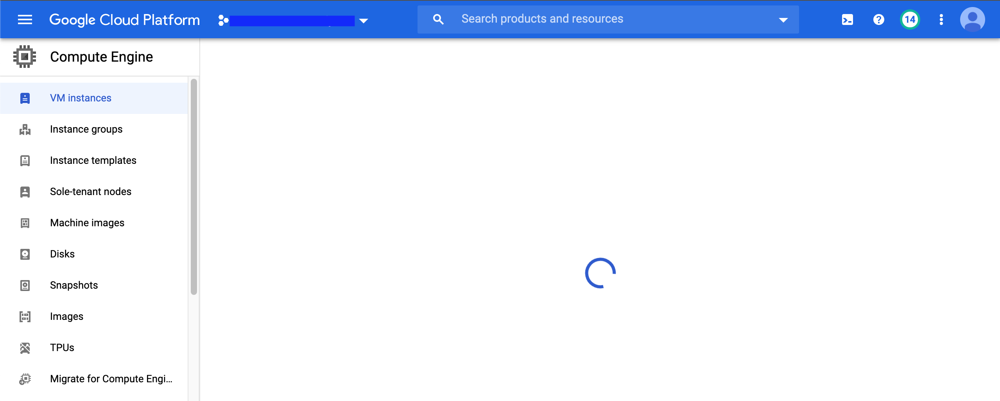
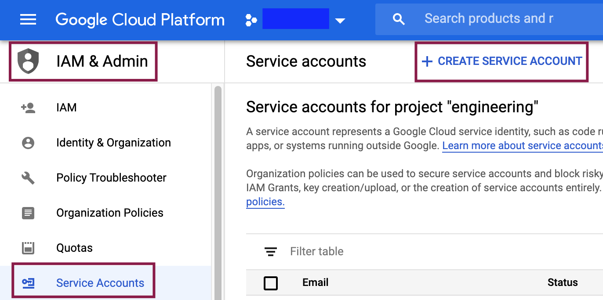
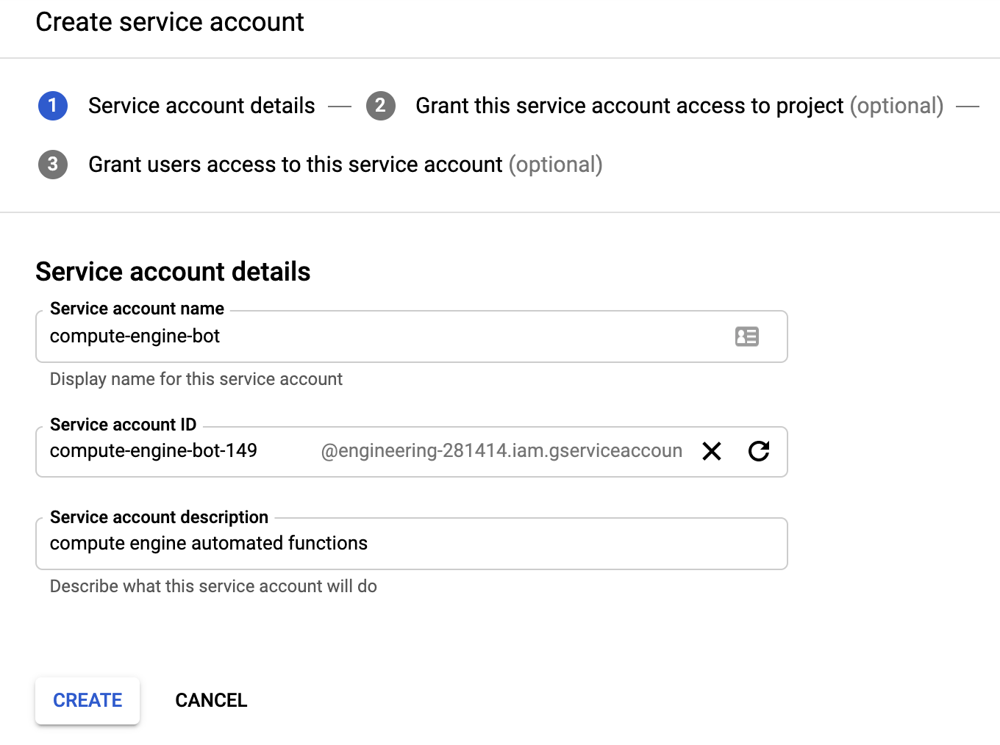
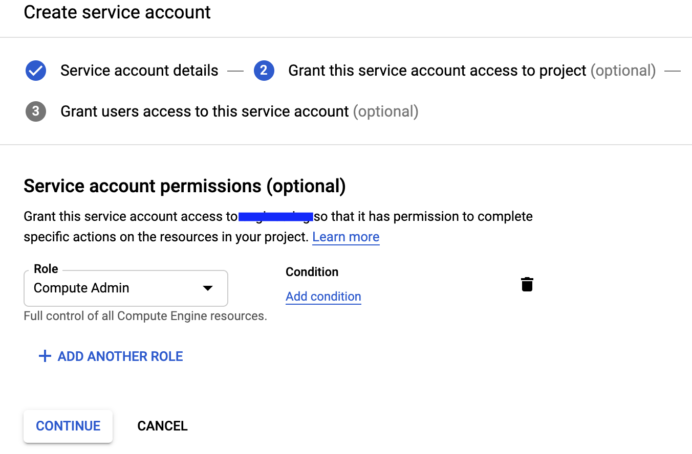
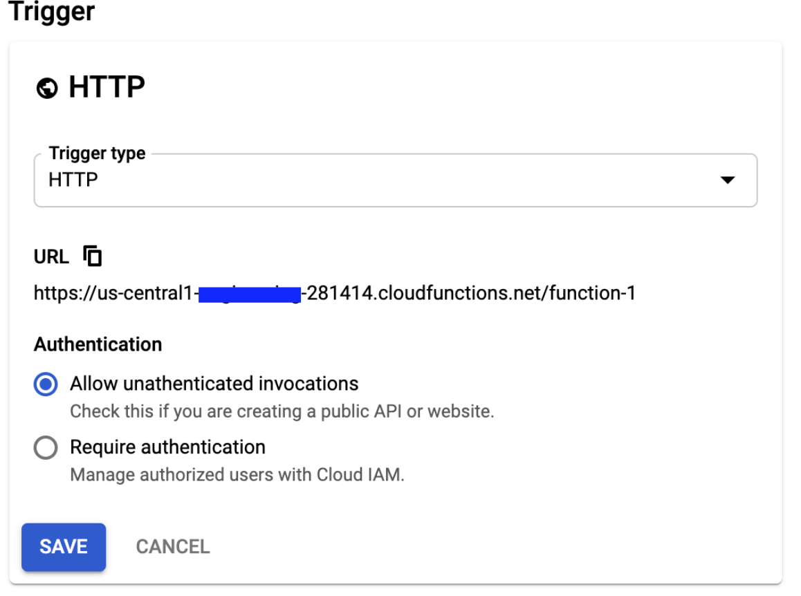
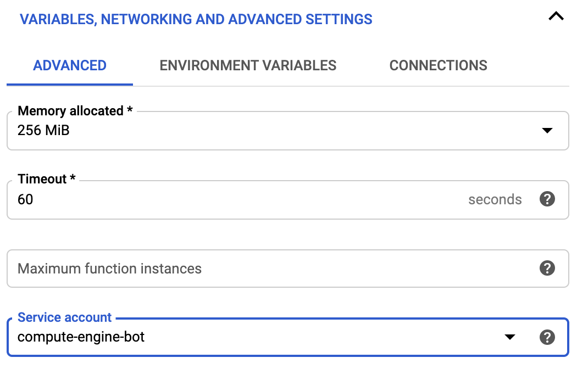
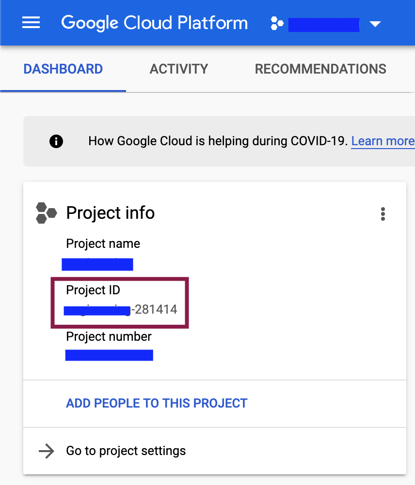
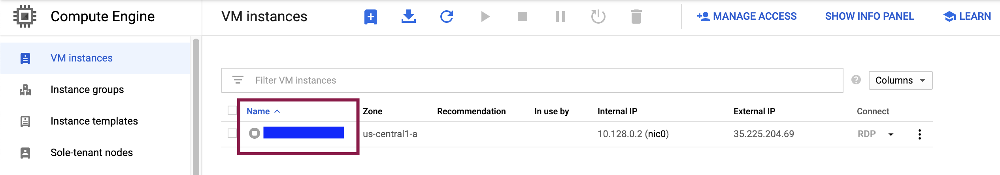

Sempre achei a interface do console do Google Cloud terrivelmente lenta. Em um projeto recente havia a necessidade de ligar e desligar constantemente uma máquina virtual, além de ativar/desativar regras de firewall. A quantidade de vezes em que via a tela de carregamento da interface no console já foi motivação suficiente para tentar automatizar essa tarefa.

Tela de carregamento do Google Cloud
A solução encontrada foi fazer uma Cloud Function ativada por um request http (ou um link) que liga/desliga uma determinada máquina. Inicialmente procurei por uma solução mais simples, em que não fosse necessário nenhum tipo de código. Caso alguém conheça uma forma mais simples de fazer a mesma tarefa, por favor se manifeste nos comentários.
O código das funções pode ser visto em meu Github.
Criar nova conta de serviço
A conta de serviço é utilizada pela Cloud Function para interagir com os outros serviços do Google Cloud. Ela deve ter os privilégios suficientes para realizar as tarefas que a função precisa executar.
Procure pelo item IAM - Admin no Cloud Console, vá para contas de serviço e crie uma nova.

Caminho para criar a conta de serviço
Dê um nome e uma descrição para conta e vá para o próximo passo.

Defina um papel adequado para a conta. O papel é o que determina o que os serviços que usam essa conta podem ou não podem fazer. Como no caso pretendemos modificar configurações do Compute Engine, sugiro o papel Compute Admin.

Selecione o papel adequado para a conta de serviço
O último passo não necessita de nenhuma configuração específica.
Criar a Cloud Function
Para criar essa Cloud Function, procure esse serviço no console e ative-o, se necesssário. Crie uma nova função, dando um nome e uma região. No tipo de trigger, selecione http e permita chamadas não autenticadas. Isso é potencialmente falho do ponto de vista da segurança, pois qualquer um que conheça a URL e os parâmetros de invocação da função será capaz de ligar/desligar suas máquinas.

Configurações de *triggering* (invocação) da função
Clique em configurações avançadas e defina a conta de serviço que acabou de ser criada:

Defina a conta de serviço a ser usada pela Cloud Funtion
No próximo passo selecione a linguagem da função como python e defina o ponto de entrada para main. Copie e cole o código da função e do arquivo requirements.txt.
Para ativar a função basta agora chamá-la pelo seu link com os parâmetros necessários.
1
https://{endereço da função}.cloudfunctions.net/{nome da função}?project={project id}&zone={zona}&instance={nome da instância}
endereço da função e nome da função: é o endereço fornecido no momento em que você criou a Cloud Function
project id: pode ser visto no dashboard do seu projeto:

Encontrando a id do projeto
zona e nome da instancia: podem ser vistos na página de resumo do Compute Engine

Encontrando a id do projeto
Agora é só salvar os links nos favoritos e pronto, não será mais necessário logar no Cloud Console toda vez que precisar ligar ou desligar uma instância.